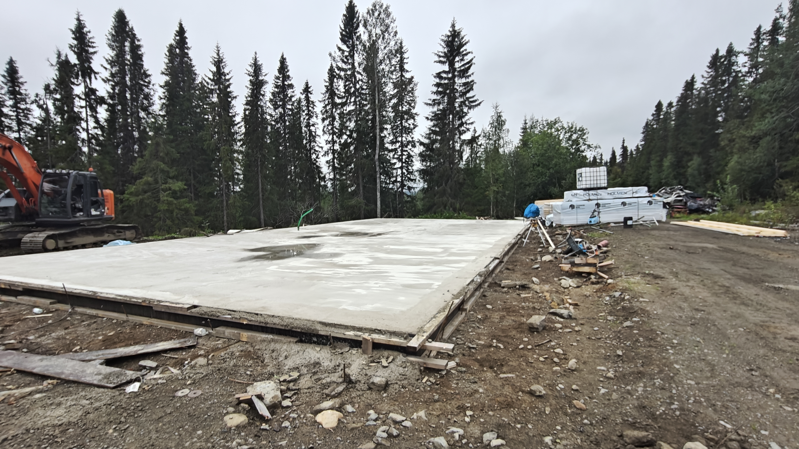
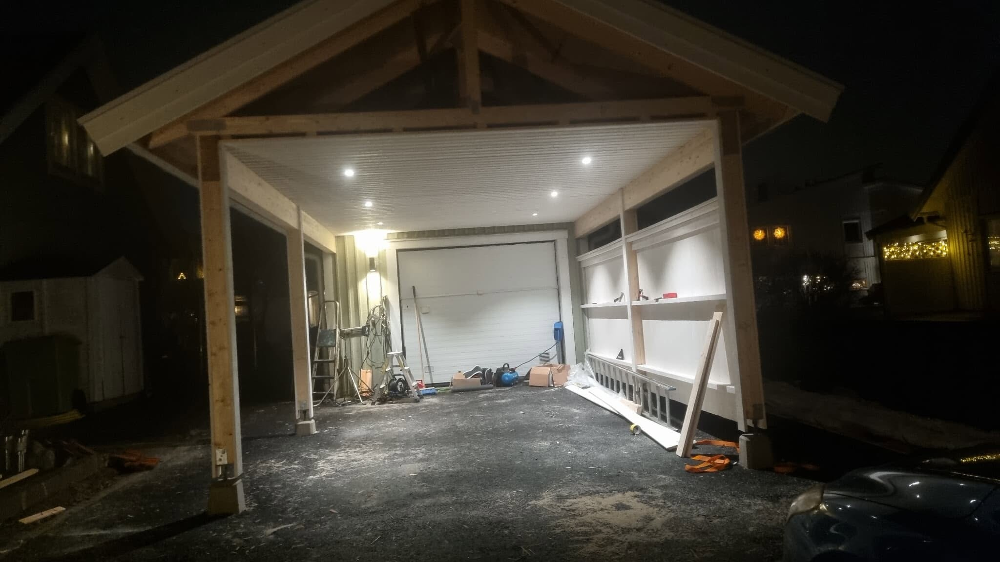

Projekt & arbetsmoment
Exempel på ritningsunderlag, markarbeten, rör, grundförberedelser och mindre byggprojekt. Bilderna är grupperade efter vad de faktiskt visar.
Bygglovsritningar & planunderlag
Underlag som hjälper privatkunder att ta projektet från idé till bygglov, offert och praktiskt utförande.

Bygglovsritning
Ritningsunderlag för bygglov, dialog och fortsatt planering.

Fasad- och planunderlag
Tydliga vyer som gör projektet lättare att förstå och bedöma.

Planvy
Planritning som visar placering, rum, öppningar och mått i bygglovsunderlaget.
Mark, rör & ledningar
Arbetsmoment med schakt, rör, ledningsstråk, återfyllning och förberedande markarbete.

Maskinellt markarbete
Schakt, fyllning och återställning där ytor och omgivning behöver hanteras noggrant.

Röranslutningar
Synliga rör och anslutningar inför kontroll, återfyllning och nästa arbetsmoment.

Ledningsstråk
Flera rör och ledningar som behöver planeras, läggas och skyddas i rätt ordning.

Brunn & rörschakt
Schakt och bäddning runt brunn och rör innan återfyllning.
Grundläggning & ytor
Förberedelser inför grund, platta och hårdgjorda ytor där nivåer och underlag styr slutresultatet.

Maskinresurs
Grävmaskin och utrustning för schakt, masshantering och markplanering.

Platta & underlag
Förberedd yta för platta, grund eller hårdgjord mark.

Form & nivåer
Formning och justering av nivåer innan nästa steg i byggprocessen.
Carport & mindre byggprojekt
Byggmoment där ritning, material, stomme och praktiskt utförande behöver fungera tillsammans.

Carportstomme
Uppbyggnad av bärande konstruktion med pelare och takåsar.

Tak & stomme
Takstomme och takläggning under arbete.

Invändig finish
Avslutande moment som gör byggdelen användbar och färdig.
Maskiner & arbetsplats
Praktisk erfarenhet från arbetsplatser där maskiner, material och flera moment behöver planeras i rätt ordning.

Schakt & anslutning
Markarbete runt rör och anslutningar där åtkomst och nivåer behöver lösas på plats.

Byggarbetsplats
Erfarenhet från arbetsmiljöer där flera yrkesgrupper och moment möts.

Schakt nära byggnad
Markarbete där befintlig byggnad, åtkomst och säkerhet påverkar arbetsmetoden.